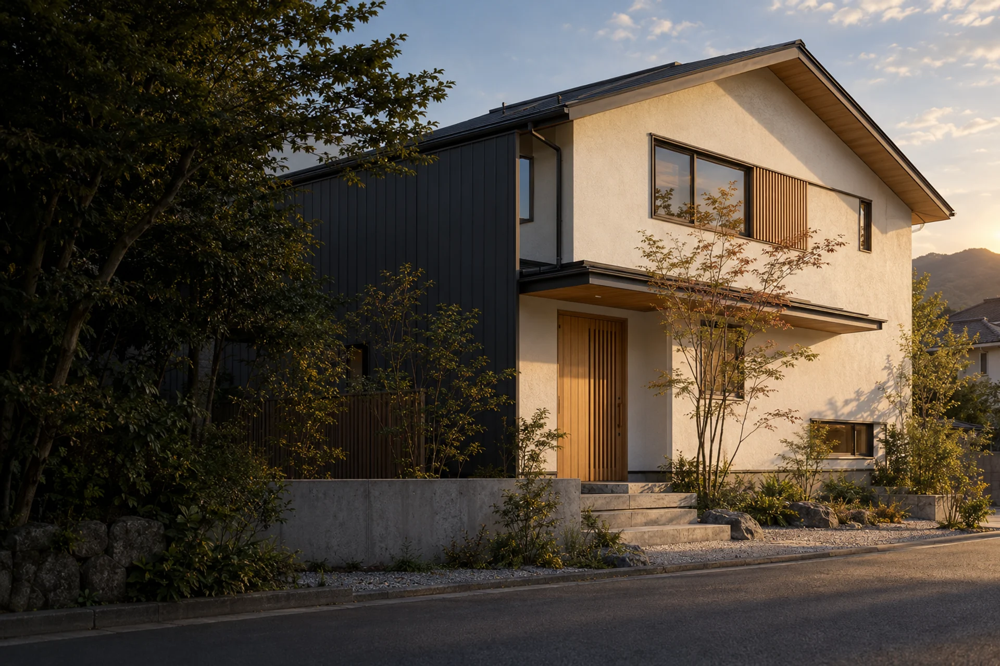

TOKUSHIMA, SINCE 1998
腕に誇りを。
街に責任を。
塗るのは、壁だけじゃない。
そこに暮らす人の、これからだ。
01
OUR PHILOSOPHY私たちについて
職人として、誇れる仕事を。
地元の人として、誠実な仕事を。
いい仕事は、
街に残る。
雨の日も、日差しの強い日も。
住まいは、家族の毎日を守っています。
だから、私たちは塗る前によく見ます。
壁の傷みも、屋根の状態も。
そこで暮らす人の、気がかりも。
徳島で、1998年から。
一軒の住まいに向き合うことが、
この街のこれからにつながると信じています。
02
CRAFTSMANSHIP職人の流儀
見えないところに、
技術は宿る。
IMAGE / 塗装作業の生成画像
01 PREPARATION
仕上がりは、
塗る前に決まる。
古い塗膜を落とす。ひびを補修する。
塗らない場所を、丁寧に守る。
仕上がると見えなくなる仕事にこそ、
私たちは時間をかけます。
02 / PRECISION
細部にこそ、腕が出る。
03 / RESPONSIBILITY
塗ったあとこそ、本当の付き合い。